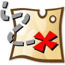
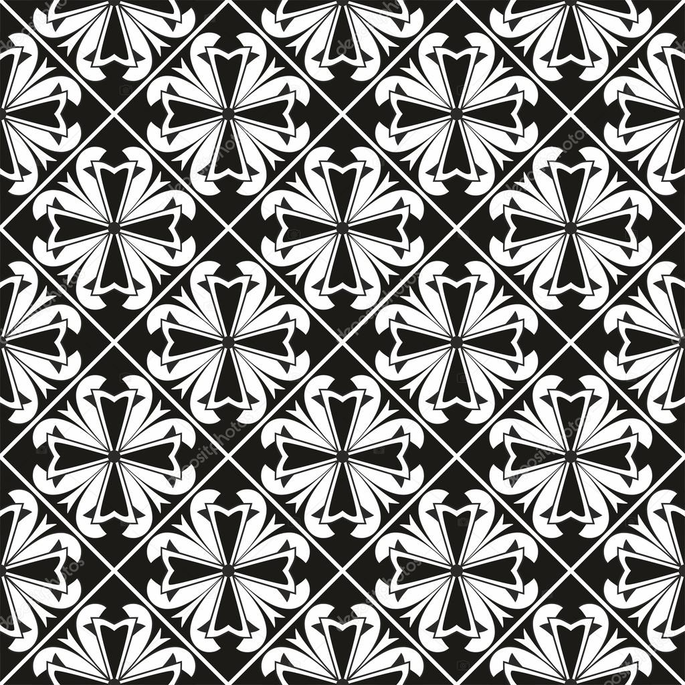

BESCHREIBUNG
Spielauswahl
| Classic | Finde alle Paare auf dem Spielfeld. Jedes Level muss in einer gewissen Zeit absolviert werden. Je weiter du im Level fortschreitest, desto größer wird das Spielfeld. |
| TimeAttack | Finde alle Paare auf dem Spielfeld. Schaffst du ein weiteres Level, spielst du mit der letzten Zeit weiter. |
| Treasure Hunt | Finde alle Schatztruhen auf dem Spielfeld. Sei jedoch vorsichtig bei der Kartenauswahl, es könnte auch eine Fallen sein, sie nehmen dir Lebenspunkte. |
| Expert | Finde in einer bestimmten Anzahl von Zügen alle Paare auf dem Spielfeld. |
| Triple | Variation von Classic in der 3 zusammengehörige Karten gefunden werden müssen. |
Spielicons
 |
Zeigt deine noch vorhandene Zeit an |
 |
Das aktuelle Level in diesem Spielmodus |
 |
Eine zugehörige Karte wird aufgedeckt |
 |
Die Zeit stoppt für 5 Sekunden |
 |
Deine Lebenspunkte |
 |
Sammle dieses PowerUp um einen Lebenspunkt zu erhalten |
 |
Zeigt die Position einer Falle |
|  | Zeigt die Position eines Schatzes |
| Es werden dir 5 Sekunden deiner Zeit genommen | |
| Eine verdeckte Karte | |
| Ein verdeckter Schatz | |
|  | Eine verdeckte Falle |
 |
Verringert die Anzahl der verbrauchten Spielzüge |